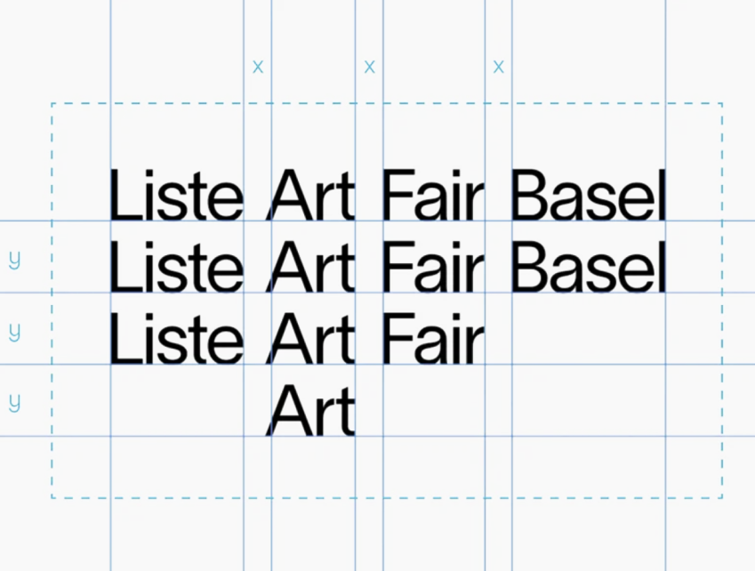
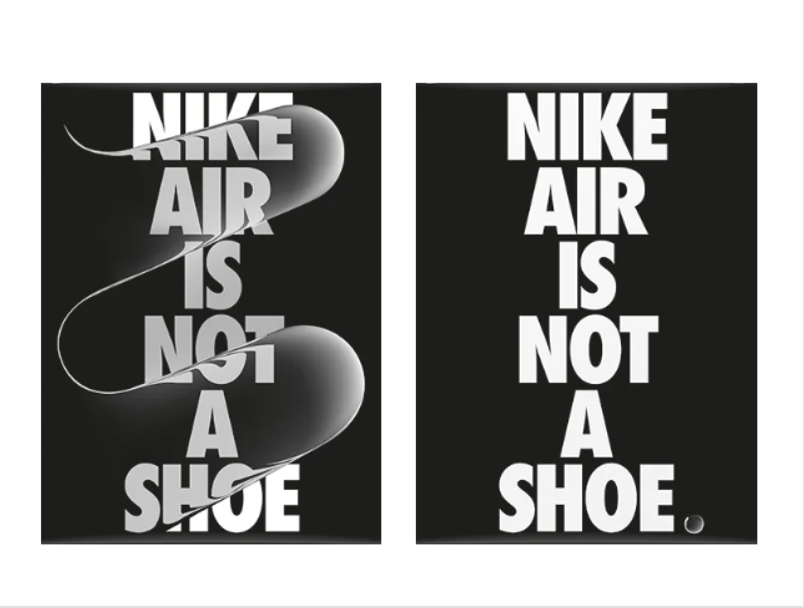
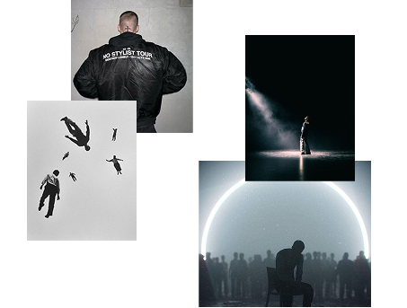
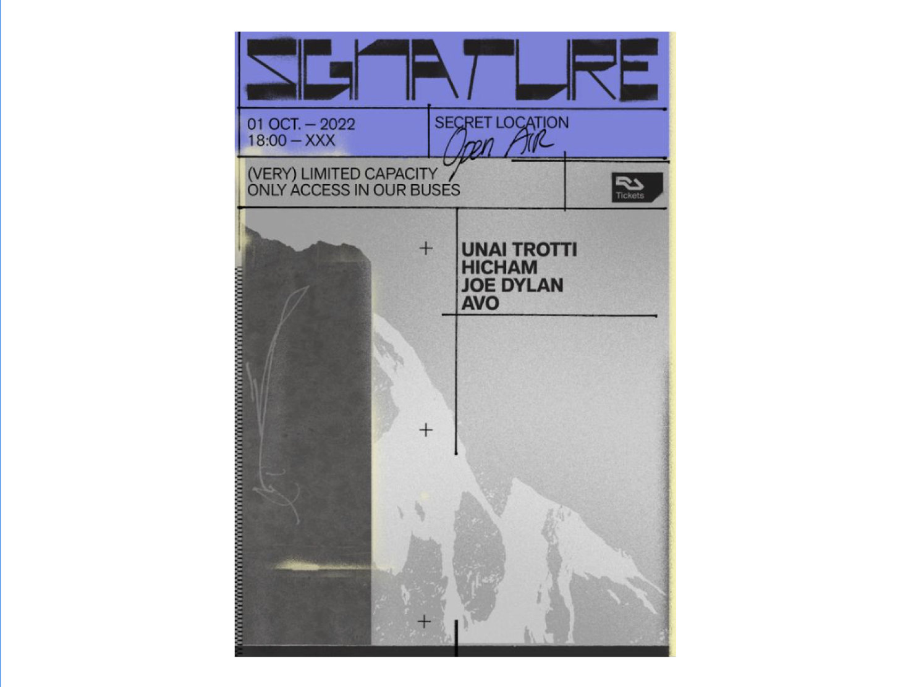
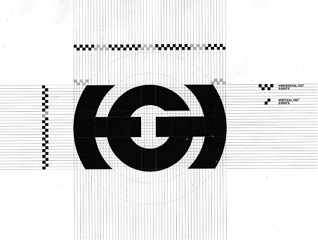
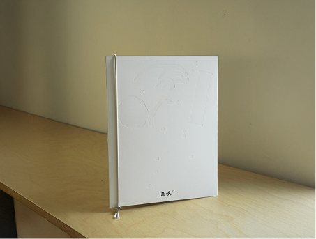
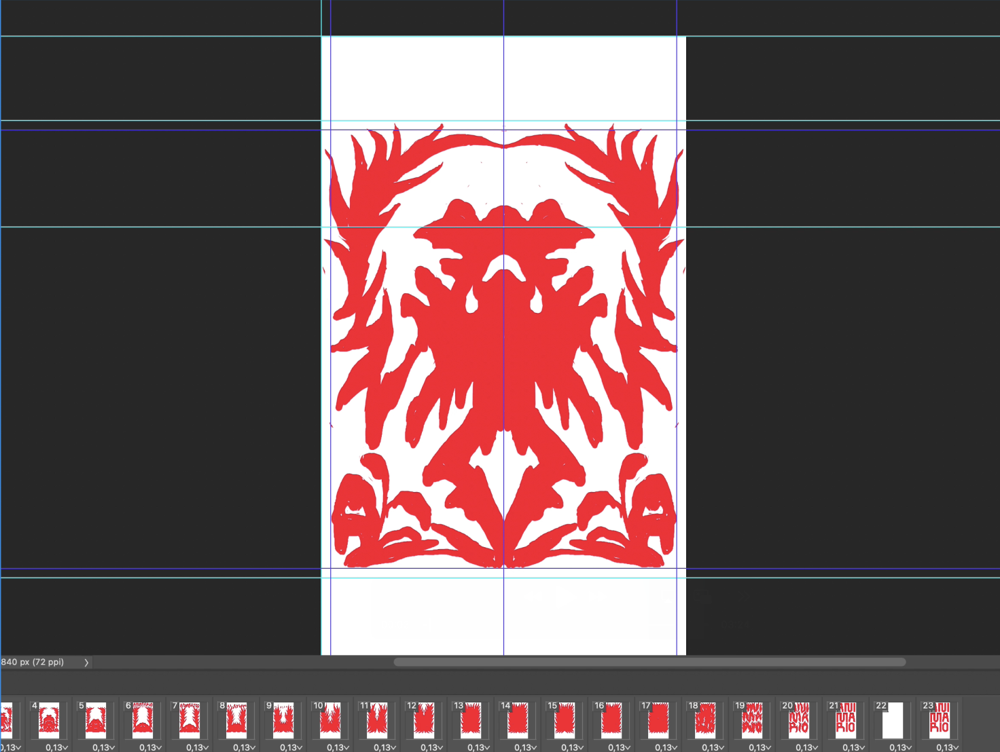
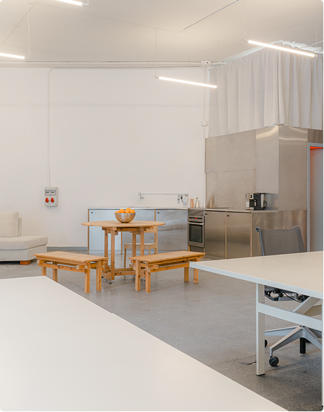

YAM Studio creates visual identities and experiences
that are bold, crafted️, and culturally tuned.
Inspired by heritage, everyday graphics, and the unexpected,
each project blends research and hands-on exploration
to produce work that stands out.
Alfonso Yordi
 Arena
Arena

 Instagram
Instagram
Alfonso Yordi is a Madrid-based designer working at the intersection
of design, art direction, and
typography. Through his practice,
YAM Studio, he develops bold visual identities and
cultural experiences
for clients worldwide.
Having worked across industries for both global brands and
cultural,
initiatives he has collaborated with renowned studios including
Uncommon, Our Polite Society,
Smol Studios, Köln Studio,
WAKA, Cocota Studio and Perlita-Calvario.
Services
Branding
Visual identities that balance clarity with edge — structured systems infused with cultural attitude and contemporary relevance.
Campaigns
Design languages built to travel: shapes, colors, and visuals that speak fluently across borders and audiences.
Art direction
From concept to image, curating the mood and coherence that makes every project sharp, rich, and unmistakable.
Typography

Custom systems, expressive lettering, and typographic play that transform words into vibrant and functional design.
Poster
A canvas for experimentation — striking compositions created to catch eyes, spark dialogue, and provoke curiosity.
Logo
Marks reduced to their essence: simple, sharp, and instantly recognizable across platforms, scales, and cultures.
Editorial
Layouts as narratives: rhythm, sequence, and texture that turn printed pages into crafted visual experiences.
Motion
Visual identities that balance clarity with edge — structured systems infused with cultural attitude and contemporary relevance.
Clients
Our Office
Come visit us at
Chapa Espacio in Madrid!

Chapa Espacio
C/ Sebastian Gomez 5, Local B1